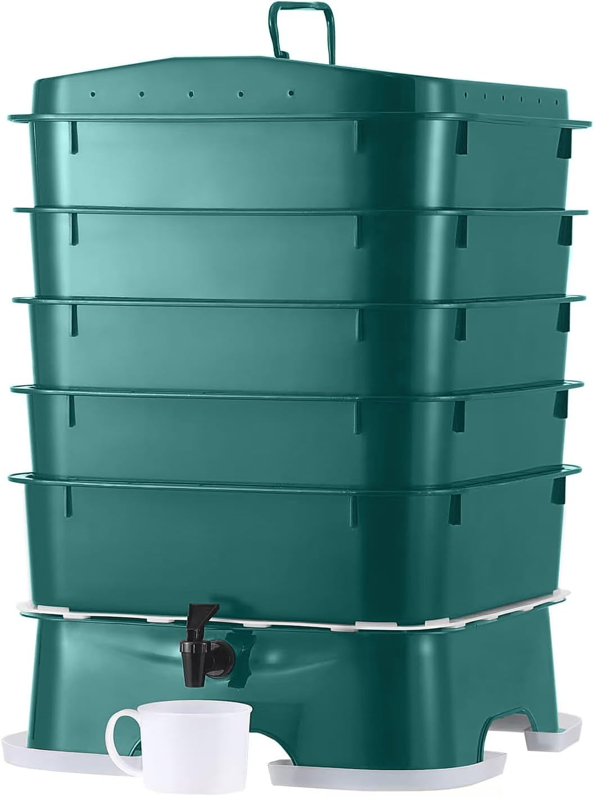

Review · Worm bins
The VermiHut Plus 5-Tray: the $82 bin with the most field reports behind it
50 L, five trays, a spigot, and a patented airflow design — plus 3,300+ ratings to lean on. The manufacturer’s numbers, the running costs, and the tradeoffs a spec sheet won’t tell you.
Disclosure: the VermiHut link on this page is an Amazon affiliate link — if you buy through it we earn a commission at no extra cost to you. It never changes the verdict below; the numbers are the manufacturer’s and the listing’s own, verified Oct 27, 2026.
One line: buy it if you want compost that makes soil — worm castings and liquid feed, at roughly zero running cost. Skip it if you don’t want to feed a colony and wait a few months for the first harvest.
A five-tray worm farm with a spigot
The VermiHut Plus is a stack of five HDPE trays in a 43.2 × 43.2 × 83.8 cm footprint — about the size of a large floor-lamp base — with a spigot in the base tray for draining liquid. The worms live in the stack; you feed from the top and harvest castings from the lower trays as they fill.
What separates it from a tote-and-lid DIY build is the airflow design. VermiHut’s M-board is a patented airflow component that routes air through the trays, and the ventilated lid carries a coconut mat and V-board that manage moisture and odor at the top of the stack. Those two complaints — smell and stagnant air — are what sink most home vermicomposting, and this design is built around them. The manufacturer’s claim for a mature colony: 10 lb of worms processing up to 5 lb of food scraps a day.
The specs, verified
| Parameter | Value |
|---|---|
| Stack volume | 50 L |
| Footprint | 43.2 × 43.2 × 83.8 cm (17 × 17 × 33 in) |
| Construction | HDPE plastic, 5 trays, ventilated lid with coconut mat |
| Airflow | Patented M-board + V-board design (manufacturer) |
| Drain | Spigot in base tray |
| Capacity claim | 10 lb worms / up to 5 lb food scraps per day (mature colony) |
| Price | $82 at Amazon US (Oct 27, 2026; fluctuates around $80–85) |
| Rating at verification | 4.5★ / 3,383 ratings (Amazon US) |
| Variant | Easy Setup: $74.50, 4.6★ / 1,740 ratings |
Sources: Amazon US listing (parent ASIN B07PRKLCZQ) and VermiHut’s published product information, both verified live Oct 27, 2026. The manufacturer’s own site was not reachable at verification; the listing and its manufacturer data are the record. The capacity figure is a manufacturer claim for a mature colony, not a day-one number — the first months are colony establishment, not peak processing.
The three-year math
| Item | 3-year cost |
|---|---|
| Bin | $82 |
| Starter worm colony (one-time) | ≈$20–30 |
| Feed | $0 — it’s food you were throwing away |
| Consumables | ≈$0 — no filters, no pods, no subscription |
| Total (3 yr) | ≈$102–112, one-time |
The structure is the point: this is the only category on the site where the three-year cost is essentially the sticker price. There’s no electricity draw, no consumable to reorder, and the “fuel” is scraps that would otherwise be trash. The output — castings plus spigot liquid — is worth money back to the garden, which no cost table on this site credits anywhere else.
What comes out is worm castings — the best thing a kitchen can make
Here’s the payoff the machines on this site can’t match: finished fertilizer, made by the system itself. As the stack works, the lower trays fill with castings — the worms’ processed output — and the spigot drains the liquid most owners dilute and use as plant feed (or simply discard). The first meaningful harvest comes after a few months of colony establishment, not in week one; the 5 lb/day claim is what a mature 10 lb colony eventually does.
That’s the tradeoff to sit with: a countertop composter gives you a small dry residue a few hours after you start a cycle, and the VermiHut gives you the best soil amendment money can’t really buy — but on a months-long clock with your hands in it. If your goal is “less trash today,” buy a machine. If your goal is “soil that actually improves,” this is the cheapest machine-free path on the site.
What it earns, and what it costs you
What it earns
- The cheapest entry to 50 L vermicomposting scale on the page — $82 for a full five-tray system.
- 3,383 ratings at 4.5★: the largest field-report base in the bin category. Whatever its flaws, thousands of households have run one.
- The spigot base handles the liquid a DIY tote build can’t — drain it to the drain or dilute it for plants.
- Five trays mean real harvest flexibility: feed from the top, harvest from below, keep the stack running.
- HDPE won’t rot or leach the way wooden or cardboard DIY builds do; it outlives several worm colonies.
- The M-board / V-board airflow design targets the two failure modes (smell, stagnant air) that sink most home bins.
- Running cost is roughly $0: no electricity, no consumables, feed is what you were throwing away.
What it costs
- It’s manual: you feed the colony and you harvest by hand. This is a chore you sign up for, not a machine you press a button on.
- The first harvest is months away; the colony needs time to establish before it processes at anything like the claimed rate.
- 83.8 cm of stack needs a corner, a shelf, or a utility spot — not the middle of a counter.
- Temperature matters: worms want a 55–80 °F (13–27 °C) band, so winter means an indoor spot.
- You buy the starter colony separately (≈$20–30).
- It produces fertilizer, not less-trash-today: if the goal is a fast, hands-off residue, a countertop machine is the better tool.
VermiHut Plus vs the rest of the bin lineup
The rest of the worm-bins page is either smaller or DIY. The Plus is the only pick that combines three things: 50 L of stack (real household scale, not a starter bin), a spigot (liquid handling built in), and a manufacturer airflow design (the M/V-board system aimed at the smell-and-stagnation failures). The 3,383-rating base is why it’s pick No. 1 there — in this category, field reports are the spec sheet that matters most.
Against the countertop machines, the comparison isn’t even close on one axis: the machines give you a processed residue in hours and cost $299–899 to run; the VermiHut gives you castings over months and costs $82 once. They solve different problems. A household that wants both can run the two together — the worm bin’s job is soil, the machine’s job is the scraps the colony can’t take or the week it can’t keep up. That’s a legitimate setup, and the vermicomposting guide covers the method end to end.
The questions, answered
Does the VermiHut Plus smell?
A well-run VermiHut shouldn’t. The design is built around it: the ventilated lid carries a coconut mat and the patented M-board and V-board components route air through the trays, so the stack stays aerated instead of stagnant. The usual failure mode is feeding the colony more than it can finish, which produces the smell rather than the bin. Feed what the worms clear, and the airflow design does the rest.
How much food can the VermiHut Plus handle?
The manufacturer claims a mature colony of about 10 lb of worms will process up to 5 lb of food scraps per day. In practice you feed what the colony finishes; start low and ramp up over the first few months while the population establishes. The 50 L stack and five trays give it room to grow well past a single-person household.
What is the spigot on the VermiHut Plus for?
The spigot drains the liquid that collects in the base tray under the worm stack. Most owners dilute it and use it as a liquid feed for plants, or simply drain it to the drain. It’s the main advantage over tote-and-lid DIY builds, which have no built-in way to handle that liquid.
VermiHut Plus or the Easy Setup variant?
Both are listed at Amazon. The Plus 5-Tray is $82 with a 4.5-star rating across 3,300+ ratings; the Easy Setup is $74.50 with a 4.6-star rating across about 1,740 ratings (verified Oct 27, 2026). The Plus is the full five-tray system with the spigot base; if you’re new to vermicomposting, the Plus’s larger rating base is the safer bet.
Where should the VermiHut Plus live?
Somewhere out of direct sun and drafts, in the band where worms work best (roughly 55–80 °F / 13–27 °C). That means a kitchen counter, utility room, or basement in winter, and a shaded porch or garage in a mild-climate summer. The 83.8 cm height means it wants a corner or a shelf rather than the middle of a counter.